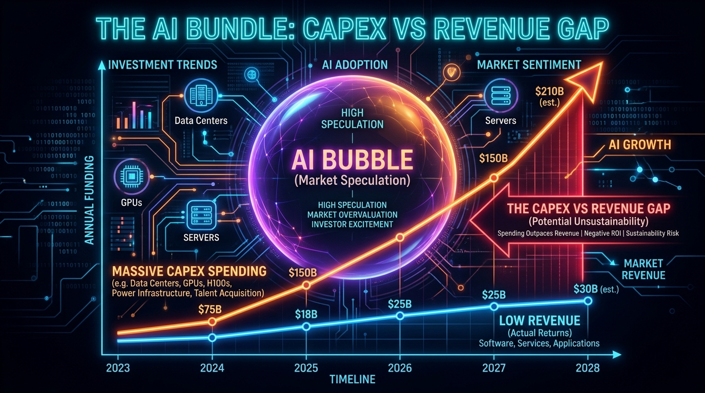
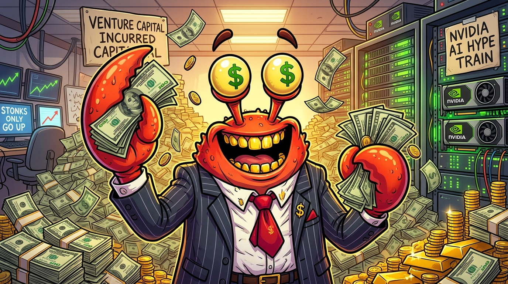
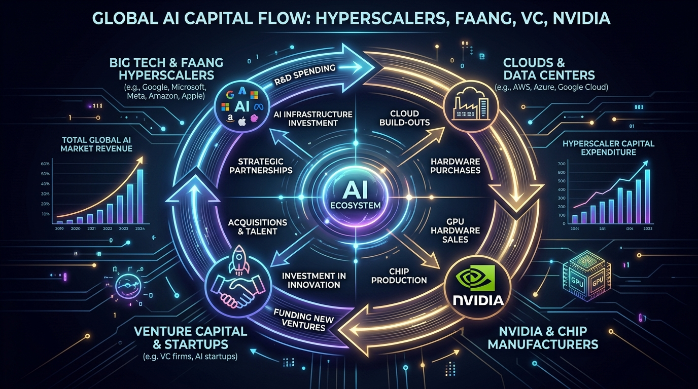

CS 5083: DATA FEMINISM
When Will AI Be Profitable?
Taylor Wise • Brian Boedecker • Arika Khor (Group 25)
# Data Feminism Principles ### When will AI be profitable and how will it be achieved? **Group Members:** Taylor Wise, Brian Boedecker, Arika Khor (Group 25) **Course:** CS 4083 / CS 5083 Ethical and Responsible AI **Assignment:** Data Analysis (Week 5 Asynchronous Assignment) **Dataset:** Epoch AI & [isaiprofitable.com](https://isaiprofitable.com) (*"When will AI be profitable and how will it be achieved?"*) --- *Each slide below covers one of the seven Data Feminism principles applied to our dataset, followed by an eighth slide comparing human analysis against our multi-agent generative AI red-team auditor.*
# Visual Anchors & Live Tracker <div style="margin-bottom: 12px;"> <a href="https://isaiprofitable.com" target="_blank" class="btn-embed">↗ Open isaiprofitable.com in New Tab</a> </div> <div class="embed-box"> <iframe src="https://isaiprofitable.com" title="Is AI Profitable Yet Live Tracker" loading="lazy"></iframe> </div> <div class="img-grid"> <div class="img-card"> <p></p> <div class="caption"><strong>Figure 1: AI CapEx vs Revenue Gap</strong><br>Massive hardware buildout outstrips real software returns.</div> </div> <div class="img-card"> <p></p> <div class="caption"><strong>Figure 2: VC Capital Injection</strong><br>Venture capital pumping billions chasing speculative multiples.</div> </div> <div class="img-card"> <p></p> <div class="caption"><strong>Figure 3: Circular Capital Loop</strong><br>Big Tech investing in startups that recycle funds back into hardware.</div> </div> </div>
# Principle #1: Examining Power Examining power (In terms of datasets) interprets as who controls the data in how it is collected, utilized, and acted upon. **How it applies:** While this dataset is published by Epoch AI and gathered through other sources showcasing AI profitability currently, you could argue that the power of the data and who controls it are the investors of the companies. Some companies may not want to create anything with AI, but are largely forced to for shareholder value. **Example:** Allbirds (A sustainable material shoe company) becoming a data center focused rental company. After announcing this, their stock climbed as high as 875%.
# Principle #2: Challenging Power Challenging power (In terms of datasets) interprets as taking the next step and how we could remedy and allow fair control of the power over the dataset. **How it applies:** This applies to our dataset because if we allow investors to control companies, then regulations, innovation and technology security suffer as it is now with our current implementation of AI. Noting that the top 10% of Americans control 93% of the stock market. **Example:** As of this moment there are not great examples of challenging power, but there are good examples of people not using it. For example, OpenAI becoming a non-profit company and spending $16.3B while having a for profit parent company. Another example is when Elon Musk combined that of XAi and SpaceX to make it look like the company is more profitable than it is for investors to donate more.
# Principle #3: Elevate Emotion and Embodiment Elevating emotion and embodiment for our dataset interprets as trying not to persuade the reader through graphs and other means by only showing a portion of the story, even if the data is correct. **How it applies:** For our dataset, this applies because there are plenty of graphs showcasing that AI is becoming more profitable than it was last year, and the year before that and..etc. However, What the graphs are missing are how many people have been laid off to save on these costs and how much has been invested in totality to un-equivalently skew the numbers. **Example:** Microsoft reported a net income of $133B this fiscal year compared to 2025’s $101B and largely credited AI. While these numbers may be true, and showcase a graph to investors that number do go up, it skips the fact that nearly 5,500 jobs were lost.
# Principle #4: Rethink Binaries and Hierarchies isaiprofitable.com shows us more or less how much of a bubble a lot of funding is being applied to. When we take a look at the list, there's a fair amount of startup or recently AI promoted companies having money injected into them by venture capitalists. It's fairly obvious that money is being injected into all of these companies, but is either floating around between them, or spent on data center costs. **Case 1: Facebook's Reality Labs project: The Metaverse with:** - loss of $88 billion - gain of $11.8 billion (rough estimate). - VC funding of $5.97 billion **Case 2: Nvidia investing into CoreWeave:** - CoreWeave took said investments (and billions debt backed by Nvidia) to Nvidia to buy a few thousand H100s. - Nvidia books this as record hardware revenue inflating their stock more
# Principle #5 — Embrace Pluralism As we saw in the most recent assignment of data centre companies lobbying to get their allotted power and water over the local municipal, **Datasets:** - isaiprofitable.com and epoch.ai both don't mention the human cost of the profit being gained. - While local community impact is fairly hard to quantify, there's a fair amount in the news about this. **Case details:** - Beltline Energy attempting to take up to 2.5 MGD (100%) of Yukon, OK's municipal wastewater buffer for a 1 GW campus, putting local agricultural wells at risk. - xAI installing unregistered methane gas turbines in Memphis, TN to bypass environmental permits, pushing industrial pollution into local residential neighborhoods.
# Principle #6: Consider Context Consider context means to consider the background behind why a number is there and what might have affected it before deciding what it must mean. **How it applies:** This applies to our dataset because “Annualized Revenue” does not provide a full look into whether AI is profitable. Considering the context behind how much money has been invested, staff count, etc. is crucial. **Example:** OpenAI estimated $5.5 billion Annualized Revenue on Dec. 31, 2024, and it’s total compute spend in 2024 was around $5.8 billion. Annualized revenue is just the expected revenue over the next 12 months, not how much it made that year, so that compute spend can’t just be subtracted from the annualized revenue. Additionally, compute spend doesn’t include all additional costs to subtract from revenue, such as facilities, salaries, etc.
# Principle #7: Make Labor Visible Make labor visible means to make the hands that labored on the data visible. **How it applies:** The Epoch AI dataset’s staff count estimates are based on looking for a count of full-time, permanent staff. It specifies that it is not looking for a count of part-time data contractors in it’s total staff count. As the principle states, they are some of the hands that labored on the data, where the labor should be visible such that they’re included in a claim of “total staff count”. **Example:** The Epoch AI “Staff Count” of 6,000 on Aug. 6, 2025 for Google in the Full AI division does not reflect it’s actual full staff, it was not looking for the part-time contractors who have hands on the data when finding that count.
# Gen AI Comparison After we wrote and ported all the slides, we had a custom AI framework go through as a red team "grader" to poke holes in all of our slides. Our main model runner used Gemini 3.8 flash with high reasoning. Additionally, we used Hermes and Jav for a more deterministic approach while having GSD and a custom swarm skill to scrape the internet for fact checking. The agent swarm talked via a shared thread and saved contexts via sql lite database. **Findings:** - The AI red team critiqued our initial drafts for lacking citations on Allbirds stock movement and Microsoft layoff numbers, which we then verified through SEC filings and news archives. - When tasked with answering the 7 principles itself, standard Gen AI defaulted to abstract ethical platitudes without balance-sheet literacy, conflating Annualized Run Rate (ARR) with net profit and erasing the outsourced contractor workforce. - The multi-agent swarm verified the compute spend numbers ($5.8B OpenAI compute against $5.5B ARR) and confirmed the local infrastructure impacts (Yukon 2.5 MGD water demand).